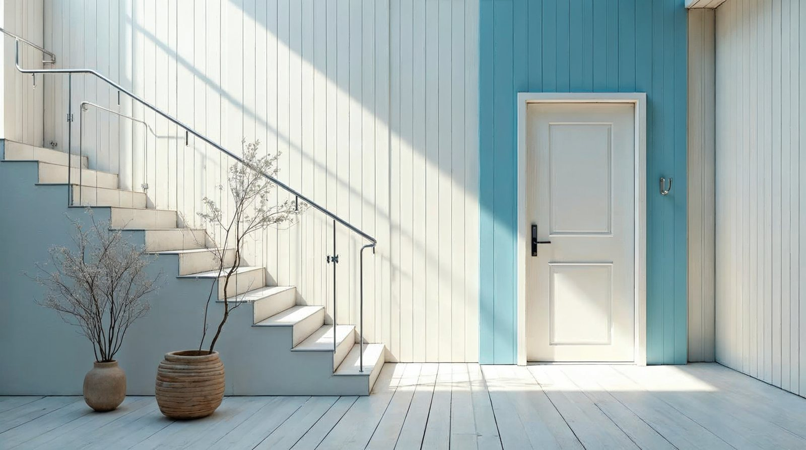
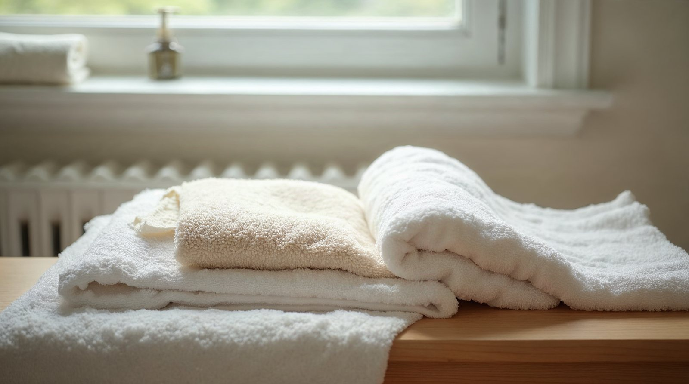
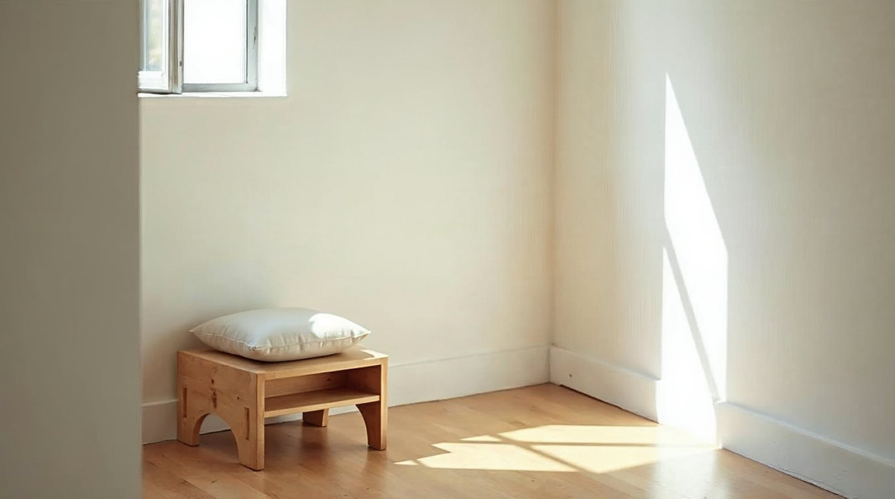
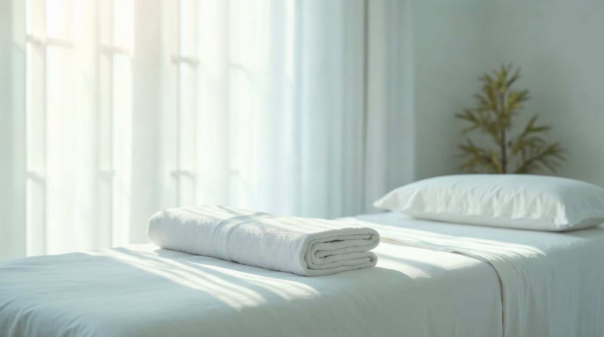
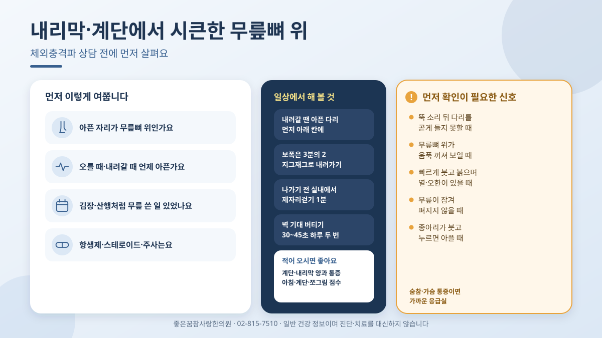

이종호 한의사 감수좋은꿈참사랑한의원 대표원장 (한의사 면허번호 19769)발행 2026-11-27 · 수정 2026-11-27
이 글의 차례
상도동처럼 언덕과 계단이 많은 동네에서는 겨울이 되면 빙판을 피하려고 내리막에서 허벅지에 힘을 잔뜩 주고 걷게 되죠. 그러다 어느 날부터 계단을 내려갈 때마다 무릎뼈 바로 위 가운데가 시큰하고, 의자에서 일어나거나 쪼그려 앉았다 일어설 때 같은 자리가 당기는 분들이 계세요.
이럴 때 저는 허벅지 앞 근육(대퇴사두근)이 무릎뼈 위쪽에 붙는 힘줄이 반복된 부담에 지쳐 있는 경우를 먼저 떠올려요. 미끄러질까 봐 조심한 덕에 넘어지진 않았는데, 그 조심이 힘줄한테는 일이 된 거예요.
이런 힘줄 통증은 쉬면 덜하다가 다시 내리막을 걸으면 되살아나는 식으로 몇 주씩 이어지기 쉬워요. 그러니까 사실은 '쉬면 덜한 것'과 '힘줄이 제자리를 찾은 것'은 다른 얘기예요.
그래서 처음 2~4주는 내려가는 방법을 바꾸고 하루 계단 양을 조절하면서, 무릎을 크게 굽히지 않는 범위에서 허벅지 힘을 유지하는 운동을 해 보세요. 운동하지 말라는 게 아니라, 무릎이 덜 지치게 쓰자는 거예요.
그래도 같은 자리가 계속 아프다면 진찰과 함께 필요할 때 초음파로 힘줄의 두께와 주변 붓기를 확인하고, 체외충격파가 맞는 상태인지 상담해요. 다만 넘어지거나 뚝 하는 소리와 함께 무릎을 곧게 펴지 못하게 되었다면, 체외충격파를 생각하기 전에 바로 병원에서 확인이 필요해요.
왜 겨울에 무릎뼈 위쪽이 아파지기 쉬울까요
- 계단이나 내리막을 내려갈 때 허벅지 앞 근육은 늘어나면서 몸무게를 버티는 브레이크 역할을 합니다. 오를 때보다 내려갈 때 무릎뼈 위쪽 힘줄에 걸리는 부담이 더 크다고 느끼는 분이 많은 이유입니다.
- 빙판이 걱정되는 겨울에는 보폭을 줄이고 무릎을 살짝 굽힌 채 버티며 걷습니다. 이 자세가 길어지면 허벅지 앞 근육이 쉬지 못하고 힘줄도 계속 당겨집니다.
- 추운 날에는 근육과 힘줄이 덜 풀린 상태에서 바로 언덕을 내려가게 됩니다. 집을 나서자마자 내리막이 시작되는 동네라면 몸이 데워질 틈이 없습니다.
- 김장이나 연말 대청소처럼 쪼그려 앉았다 일어서기를 수십 번 반복하는 일이 겹치면, 무릎을 깊게 굽힌 상태에서 힘줄이 크게 당겨지는 순간이 늘어납니다.
- 두꺼운 외투와 장바구니, 아이를 안은 무게까지 더해지면 계단 한 칸마다 무릎이 받는 무게가 늘어납니다.
- 겨울 동안 운동을 쉬어 허벅지 근력이 떨어진 상태에서 연말 산행이나 여행으로 갑자기 내리막을 많이 걸으면, 힘줄이 감당할 수 있는 양을 넘기기 쉽습니다.
- 힘줄은 근육보다 피가 덜 돌아 회복이 느린 조직입니다. 그래서 하루 이틀 쉬면 덜한 듯하다가 다시 무리하면 같은 자리가 아픈 흐름이 몇 주에서 몇 달까지 이어질 수 있습니다.
- 한의학에서는 무릎 주변 힘줄을 근(筋)으로 보고, 추위와 피로가 겹쳐 근이 굳고 기혈이 잘 돌지 못하면 당기고 시큰한 통증이 생긴다고 설명하기도 합니다.
무릎뼈 위쪽 통증, 다른 무릎 통증과 이렇게 나눠 봅니다
- 무릎뼈 바로 위 가운데, 손가락 하나로 짚을 수 있는 자리가 아프고 내려갈 때와 쪼그려 앉을 때 심하다면 무릎뼈 위쪽 힘줄 쪽을 먼저 봅니다.
- 무릎뼈 바로 아래가 아프고 점프나 계단 오르기에서 심하다면 무릎뼈 아래 힘줄 쪽일 수 있습니다.
- 무릎뼈 뒤나 주변이 넓게 뻐근하고, 영화관 좌석처럼 무릎을 굽히고 오래 앉아 있다 일어날 때 불편하다면 무릎뼈와 허벅지뼈가 맞닿는 관절 쪽을 함께 살핍니다.
- 무릎뼈 앞이 말랑하게 부풀었다면 무릎을 꿇는 자세로 생긴 주머니 붓기일 수 있습니다.
- 무릎 안쪽 관절 선이 아프고 비틀 때 걸리거나 무릎이 갑자기 잠기는 느낌이 있다면 연골판 쪽 확인이 필요할 수 있습니다.
- 무릎 전체가 붓고 굽히기 어렵다면 관절 안에 물이 찼는지 먼저 봅니다.
- 이렇게 아픈 자리와 아픈 동작을 나누어 보면 어떤 진찰과 검사가 먼저 필요한지 정하기가 쉬워집니다.

먼저 이렇게 여쭙니다
- 아픈 자리를 손가락으로 짚어 보시도록 하고, 무릎뼈 위인지 아래인지, 가운데인지 옆쪽인지 여쭙니다.
- 언제부터 아팠는지, 그 무렵 산행이나 김장, 대청소, 이사처럼 무릎을 많이 쓴 일이 있었는지 여쭙니다.
- 계단을 오를 때와 내려갈 때 가운데 어느 쪽이 더 아픈지, 내리막을 몇 분쯤 걸으면 시큰해지는지 여쭙니다.
- 아침에 일어나 첫 몇 걸음이 뻣뻣했다가 걷다 보면 풀리는지, 오히려 걸을수록 심해지는지 여쭙니다.
- 무릎이 부은 적이 있는지, 붉거나 뜨거운 적이 있는지, 무릎이 꺾이거나 잠기는 느낌이 있었는지 여쭙니다.
- 넘어지거나 부딪힌 일, 뚝 하는 소리를 들은 적이 있는지 여쭙니다.
- 최근 먹은 약(특히 일부 항생제나 스테로이드), 아픈 자리에 주사를 맞은 적, 피를 묽게 하는 약을 드시는지 여쭙니다. 체외충격파를 상담할 때도 꼭 필요한 정보입니다.
- 하루 동안 계단을 몇 층쯤 오르내리는지, 사는 집과 일터 주변의 언덕길과 계단 사정을 여쭙니다.

일상에서 먼저 해 볼 수 있는 것
내려가는 방법 바꾸기
- 계단을 내려갈 때는 난간을 잡고, 아픈 다리를 먼저 아래 칸에 내린 뒤 덜 아픈 다리를 옮깁니다. 올라갈 때는 반대로 덜 아픈 다리를 먼저 올립니다. 이렇게 하면 몸무게를 버티며 내려가는 일을 덜 아픈 쪽 허벅지가 맡게 됩니다.
- 가파른 내리막에서는 보폭을 평소의 3분의 2쯤으로 줄이고, 길이 넓다면 지그재그로 비스듬히 내려갑니다. 뒤꿈치로 쿵 내딛기보다 발바닥 전체로 닿도록 합니다.
- 계단이 길게 이어지는 길보다 조금 돌아가더라도 경사가 완만한 길이나 엘리베이터가 있는 길을 고릅니다. 지하철역에서는 내려가는 쪽만이라도 에스컬레이터나 엘리베이터를 씁니다.
- 빙판이 걱정되는 날에는 미끄럼 방지 밑창이 있는 신발을 신고, 산행이나 긴 내리막에는 등산 스틱을 짚어 무릎으로 가는 무게를 나눕니다.
나가기 전 5분 데우기
- 집을 나서기 전 실내에서 제자리걷기 1분, 의자를 잡고 발뒤꿈치 들기 15번, 무릎을 반쯤만 굽혔다 펴는 얕은 앉았다 일어서기 10번을 합니다.
- 외출 중에는 무릎 보온대나 긴 내의로 무릎 주변이 차갑게 식지 않게 합니다. 꽉 조이는 보호대를 하루 종일 차기보다 보온 위주로 씁니다.
하루 무릎 일거리 나누기
- 김장, 대청소처럼 쪼그려 앉는 일은 낮은 의자에 앉아서 하고, 30분마다 일어나 무릎을 펴고 걷습니다.
- 무거운 장바구니는 한 번에 들고 언덕을 오르내리기보다 두 번에 나누거나 바퀴 달린 장바구니를 씁니다.
- 하루 걸음 수를 갑자기 줄이기보다 평지 걷기는 유지하고 계단과 내리막만 줄입니다. 힘줄은 완전히 쉬게 하는 것보다 아프지 않은 범위에서 적당히 쓰는 편이 회복에 도움이 되는 경우가 많습니다.
허벅지 힘 유지하기(아프지 않은 범위에서)
- 벽에 등을 기대고 무릎을 30~45도쯤만 굽힌 채 30~45초 버티기를 하루 두 번, 4~5번씩 합니다. 무릎을 깊게 굽히지 않고 버티는 운동이라 힘줄을 크게 당기지 않으면서 허벅지 힘을 유지하기 좋습니다.
- 바닥에 누워 한쪽 무릎은 세우고 다른 쪽 다리를 곧게 편 채 30cm쯤 들어 5초 버티기를 10번 합니다.
- 운동 중 통증은 0에서 10 가운데 3 정도를 넘지 않게 하고, 다음 날 아침 통증이 평소보다 심해졌다면 다음 운동량을 줄입니다.
찜질과 잠자리
- 내리막을 많이 걸어 시큰한 날 저녁에는 따뜻한 수건으로 무릎 위를 10~15분 찜질하고, 갑자기 붓고 열이 나는 느낌이 있다면 찬 찜질을 짧게 합니다. 어느 쪽이든 피부에 직접 닿지 않게 수건을 사이에 둡니다.
- 잘 때 무릎을 깊게 굽히고 웅크리는 자세가 길어지면 아침에 뻣뻣할 수 있어, 무릎 사이에 얇은 베개를 끼우고 살짝만 굽힌 자세로 눕습니다.
체외충격파는 어떤 경우에 상담하나요
- 체외충격파는 몸 바깥에서 압력 파동을 아픈 힘줄이나 그 주변에 전달하는 장비를 이용하는 진료로, 힘줄 통증이 몇 주 넘게 이어지고 생활 조절만으로는 같은 자리가 계속 불편할 때 진찰을 거쳐 고려합니다.
- 다친 지 며칠 안 된 상태, 무릎이 뜨겁게 붓고 붉은 상태, 힘줄이 끊어진 것이 의심되는 상태에서는 먼저 하지 않고 다른 확인을 앞에 둡니다.
- 피를 묽게 하는 약을 드시거나 피가 잘 멈추지 않는 분, 임신 중인 분, 아픈 자리에 감염이나 종양이 있는 경우, 최근 그 자리에 주사를 맞은 경우, 뼈가 자라는 중인 청소년은 미리 말씀해 주셔야 합니다. 이런 경우에는 하지 않거나 시기를 미룰 수 있습니다.
- 좋은꿈참사랑한의원에는 제우스와 한일티엠 체외충격파 장비가 있어, 아픈 자리의 깊이와 범위를 보고 어떤 장비와 세기를 쓸지 진료 때 정합니다.
- 처음에는 낮은 세기부터 시작해 받는 동안의 느낌을 여쭈며 맞춥니다. 받는 중에 시큰하거나 울리는 느낌이 들 수 있고, 받은 뒤 하루 이틀 뻐근함이 남는 분도 있습니다. 참기 어려우면 바로 말씀해 주세요.
- 몇 번을 어떤 간격으로 받을지는 상태와 반응을 보며 정하고, 비용과 보험 적용 여부는 방문 전 전화로 확인해 주세요.
- 체외충격파를 받는 동안에도 내려가는 방법과 계단 양 조절, 허벅지 힘 운동은 함께 이어 가는 것이 중요합니다. 장비가 힘줄이 날마다 받는 부담을 대신 덜어 주지는 않기 때문입니다.
상황별 예시
- 예를 들어 상도동 언덕 위에 살며 매일 아침 긴 계단을 내려 출근하는 직장인이, 첫눈이 온 뒤로 빙판이 걱정되어 허벅지에 힘을 주고 내려가다가 3주째 무릎뼈 위가 시큰한 경우, 내려가는 쪽만 완만한 길로 바꾸고 아픈 다리를 먼저 내리는 방법과 벽에 기대 버티기를 하루 두 번 해 보며 2주쯤 기록해 봅니다.
- 예를 들어 김장을 하며 이틀 동안 쪼그려 앉았다 일어서기를 반복한 뒤 무릎뼈 위쪽이 당기고, 그 뒤로 의자에서 일어날 때마다 같은 자리가 아픈 경우, 남은 정리는 낮은 의자에 앉아서 하고 깊게 쪼그리는 동작을 1~2주 줄여 봅니다. 무릎이 붓거나 뜨거워졌다면 관절 안에 물이 찼는지 먼저 확인합니다.
- 예를 들어 연말 산행에서 긴 하산 길을 내려온 뒤 양쪽 무릎 위가 뻐근했는데, 한쪽만 한 달 넘게 계단을 내려갈 때마다 아픈 경우, 진찰과 초음파로 양쪽 힘줄을 비교해 보고 체외충격파가 맞는 상태인지 상담할 수 있습니다.
- 예를 들어 노량진역 환승 계단을 하루 여러 번 오르내리는 수험생이, 겨울 들어 운동을 완전히 끊고 앉아만 있다가 무릎 위가 시큰해진 경우, 계단을 아예 피하기보다 내려가는 쪽만 엘리베이터를 쓰고 쉬는 시간에 다리 들어 버티기로 허벅지 힘을 유지해 봅니다.
- 예를 들어 계단을 내려가다 미끄러지며 뚝 하는 느낌이 든 뒤 무릎을 곧게 편 채 다리를 들어 올리지 못하는 경우에는 힘줄이 크게 다쳤을 수 있어, 체외충격파보다 정형외과 진료와 영상 검사가 먼저입니다.

자주 하는 오해
- 무릎이 아프면 계단을 아예 피하고 집에만 있어야 한다고 여기기 쉽지만, 힘줄은 전혀 쓰지 않으면 오히려 약해질 수 있습니다. 내리막과 깊은 쪼그리기만 줄이고 평지 걷기와 허벅지 힘 운동은 이어 가는 편이 좋습니다.
- 체외충격파는 세게 받을수록 빨리 덜해진다고 생각하는 분도 있지만, 세기는 참을 수 있는 범위에서 상태에 맞춰 정하는 것이고 세다고 더 좋은 것은 아닙니다.
- 체외충격파만 받으면 생활은 그대로여도 된다고 여기기 쉽습니다. 날마다 같은 부담이 이어지면 힘줄이 회복할 틈이 없어, 내려가는 방법과 하루 계단 양을 함께 조절해야 합니다.
- 무릎 통증은 다 연골이 닳아서라고 단정하는 분도 있습니다. 아픈 자리가 무릎뼈 위 힘줄인지, 관절 안쪽인지에 따라 살필 것과 쓰는 방법이 달라집니다.
- 겨울에 아픈 무릎은 날이 풀리면 저절로 괜찮아질 거라며 몇 달을 참는 경우도 있습니다. 힘줄 통증은 오래될수록 조절에 시간이 더 걸릴 수 있어, 한 달 넘게 이어지면 한 번 확인해 보는 편이 좋습니다.
스스로 점검해 보세요
- 아픈 자리를 손가락 하나로 짚을 수 있고, 그 자리가 무릎뼈 바로 위 가운데다.
- 계단이나 내리막을 내려갈 때가 오를 때보다 더 아프다.
- 쪼그려 앉았다 일어설 때나 낮은 의자에서 일어날 때 같은 자리가 당긴다.
- 아침 첫 몇 걸음이나 오래 앉아 있다 일어날 때 무릎 위가 뻣뻣하다.
- 쉬면 덜하다가 다시 내리막을 걸으면 되살아나는 일이 2주 넘게 반복된다.
- 최근 김장, 대청소, 산행, 이사처럼 무릎을 많이 쓴 일이 있었다.
- 무릎이 붓거나 뜨겁거나, 갑자기 힘이 빠져 꺾인 적은 없다.

한의원에서 함께 살필 수 있는 경우
- 내려가는 방법과 계단 양을 바꿔 봤는데도 같은 자리가 2~4주 넘게 아픈 경우
- 아픈 자리가 힘줄인지 관절 쪽인지 헷갈려 정리가 필요한 경우
- 양쪽 무릎 가운데 한쪽만 오래 아파 양쪽을 비교해 보고 싶은 경우
- 체외충격파가 맞는 상태인지, 받는다면 생활은 어떻게 조절할지 상담이 필요한 경우
좋은꿈참사랑한의원에서는 첫 방문 때 아픈 자리와 시작된 시기, 그 무렵 무릎을 많이 쓴 일, 사는 곳과 일터 주변의 언덕길과 계단 사정을 먼저 듣습니다. 그다음 통증으로 오신 분도 맥부터 짚어 몸 전체의 피로와 찬 정도를 살피고, 혀와 배를 함께 보며 잠과 소화, 붓는 정도까지 확인합니다.
이어서 무릎뼈 위와 아래, 관절 선을 나누어 눌러 보고, 계단 내려가기와 얕은 쪼그려 앉기, 한 발 서기를 직접 해 보시며 어느 동작에서 아픈지 봅니다. 필요하면 초음파로 힘줄의 두께와 결, 주변에 물이 고였는지를 양쪽 비교해 화면을 함께 보며 설명해 드립니다.
상태가 맞는다고 판단되면 체외충격파(제우스·한일티엠)를 어느 자리에 어떤 세기로 할지 정하고, 침이나 온열 치료를 함께 쓸지도 의논합니다. 힘줄이 끊어졌거나 뼈 쪽 확인이 먼저라고 판단되면 영상 검사가 가능한 병원을 안내해 드립니다. 다음 진료 때는 지난번 이후 계단과 내리막에서 어땠는지, 운동 기록을 이어서 여쭈어 비교합니다.
얼마나 지켜보고 언제 상담할까요
- 내려가는 방법과 계단 양을 바꾸고 2~4주 동안 통증 점수를 기록합니다. 내려갈 때 통증이 조금씩 줄어드는 흐름이라면 같은 방법을 이어 갑니다.
- 4주가 지나도 같은 자리가 그대로이거나, 아픈 날이 점점 늘어난다면 진찰을 받아 보세요.
- 체외충격파를 받는 중이라면 매번 받은 뒤 1~2일 동안의 느낌과 계단 통증을 적어 다음 진료 때 보여 주시면 세기와 간격을 정하는 데 도움이 됩니다.
- 아래 신호가 있으면 지켜보지 말고 먼저 확인을 받습니다.
이렇게 기록해 오시면 상담이 쉬워집니다
- 아픈 자리를 표시한 무릎 사진이나 그림
- 하루 계단과 내리막을 걸은 양(대략 몇 층, 몇 분)과 그날의 통증 점수(0~10)
- 아침 첫걸음, 계단 내려가기, 쪼그려 앉았다 일어서기 각각의 통증 점수
- 통증이 시작되기 전 무릎을 많이 쓴 일(김장, 대청소, 산행, 이사 등)
- 복용 중인 약, 최근 맞은 주사, 피를 묽게 하는 약 여부
- 예전에 무릎을 다치거나 검사받은 기록이 있다면 결과지
점수는 대충 매기셔도 괜찮아요. 같은 사람이 같은 방식으로 매기면, 몇 주 지나 흐름이 보이거든요.
통증을 살피고 체외충격파가 맞는지 판단하는 건 제가 할게요. 대신 하나만 부탁드려요. 내리막과 계단에서는 보폭을 줄여 최대한 천천히 내려가 주세요. 딴 건 하시던 대로 하셔도 돼요.
무릎은 안 쓰는 게 아니라 잘 쓰면 되는 거예요. 언덕 많은 동네에서 계단을 다 피할 수는 없으니까요. 궁금한 건 오셔서 편하게 물어보세요.
이런 증상은 먼저 확인이 필요합니다
- 넘어지거나 미끄러지며 뚝 하는 소리가 난 뒤 무릎을 곧게 편 채 다리를 들어 올리지 못하는 경우
- 무릎뼈 위가 움푹 꺼져 보이거나, 걷다가 무릎이 갑자기 꺾이는 경우
이런 신호가 있으면 한의원보다 가까운 병원이나 응급실을 먼저 찾으세요.
관련 글
- 무릎뼈 아래가 아파 점프나 쪼그려 앉기가 불편할 때는 어떻게 살피나요?
- 계단을 내려갈 때 무릎이 아프면 한의원에서는 무엇을 먼저 묻나요?
- 체외충격파를 처음 받기 전에 알아 두면 좋은 것은요?

여쭙는 것
- 아픈 자리를 손가락으로 짚어 보시도록 하고, 무릎뼈 위인지 아래인지, 가운데인지 옆…
- 언제부터 아팠는지, 그 무렵 산행이나 김장, 대청소, 이사처럼 무릎을 많이 쓴 일이…
- 계단을 오를 때와 내려갈 때 가운데 어느 쪽이 더 아픈지, 내리막을 몇 분쯤 걸으면…
생활에서 해 볼 것
- 계단을 내려갈 때는 난간을 잡고, 아픈 다리를 먼저 아래 칸에 내린 뒤 덜 아픈 다…
- 가파른 내리막에서는 보폭을 평소의 3분의 2쯤으로 줄이고, 길이 넓다면 지그재그로…
- 계단이 길게 이어지는 길보다 조금 돌아가더라도 경사가 완만한 길이나 엘리베이터가 있…
한의원에서 함께 살필 것
- 내려가는 방법과 계단 양을 바꿔 봤는데도 같은 자리가 2~4주 넘게 아픈 경우
- 아픈 자리가 힘줄인지 관절 쪽인지 헷갈려 정리가 필요한 경우
- 양쪽 무릎 가운데 한쪽만 오래 아파 양쪽을 비교해 보고 싶은 경우
먼저 확인이 필요한 신호
- 넘어지거나 미끄러지며 뚝 하는 소리가 난 뒤 무릎을 곧게 편 채 다리를 들어 올리지…
- 무릎뼈 위가 움푹 꺼져 보이거나, 걷다가 무릎이 갑자기 꺾이는 경우
한눈에 보는 표
| 구분 | 핵심 |
|---|---|
| 여쭙는 것 | 아픈 자리를 손가락으로 짚어 보시도록 하고, 무릎뼈 위인지 아래인지, 가운데인지 옆쪽인지 여쭙니다. 언제부터 아팠는지, 그 무렵 산행이나 김장, 대청소, 이사처럼 무릎을 많이 쓴 일이 있었는지 여쭙니다. |
| 생활에서 해 볼 것 | 계단을 내려갈 때는 난간을 잡고, 아픈 다리를 먼저 아래 칸에 내린 뒤 덜 아픈 다리를 옮깁니다. 올라갈 때는 반대로 덜 아픈 다리를 먼저 올립니다. 이렇게 하면 몸무게를 버티며 내려가는 일을 덜 아픈 쪽 허벅지가 맡게 됩니다. 가파른 내리막에서는 보폭을 평소의 3분의 2쯤으로 줄이고, 길이 넓다면 지그재그로 비스듬히 내려갑니다. 뒤꿈치로 쿵 내딛기보다 발바닥 전체로 닿도록 합니다. |
| 한의원에서 함께 살필 것 | 내려가는 방법과 계단 양을 바꿔 봤는데도 같은 자리가 2~4주 넘게 아픈 경우 아픈 자리가 힘줄인지 관절 쪽인지 헷갈려 정리가 필요한 경우 |
| 먼저 확인이 필요한 신호 | 넘어지거나 미끄러지며 뚝 하는 소리가 난 뒤 무릎을 곧게 편 채 다리를 들어 올리지 못하는 경우 무릎뼈 위가 움푹 꺼져 보이거나, 걷다가 무릎이 갑자기 꺾이는 경우 |
자주 묻는 질문
무릎뼈 위가 아프면 계단을 아예 쓰지 말아야 하나요?
아예 피하기보다 내려가는 쪽을 줄이고 방법을 바꾸는 것을 먼저 권합니다. 난간을 잡고 아픈 다리를 먼저 내리며, 내리막만 엘리베이터나 완만한 길로 바꾸고 평지 걷기는 이어 가 보세요.
체외충격파는 아프다고 바로 받을 수 있나요?
진찰로 아픈 자리와 원인을 먼저 확인하고, 필요하면 초음파로 힘줄 상태를 본 뒤 맞는 경우에 상담합니다. 다친 지 얼마 안 되었거나 붓고 뜨거운 상태라면 다른 확인을 먼저 합니다.
체외충격파를 받는 동안 운동은 해도 되나요?
아프지 않은 범위의 평지 걷기와 벽에 기대 버티기 같은 운동은 이어 가는 경우가 많습니다. 받은 당일에는 긴 내리막이나 무리한 운동을 피하고, 구체적인 운동량은 진료 때 상태를 보고 함께 정합니다.
무릎 보호대를 차면 도움이 되나요?
추운 날 보온용으로 가볍게 쓰는 것은 괜찮지만, 꽉 조이는 보호대를 하루 종일 차면 허벅지 근육을 덜 쓰게 될 수 있습니다. 긴 내리막이나 산행처럼 부담이 큰 때에만 쓰는 방법을 권합니다.
체외충격파는 몇 번 받아야 하나요?
횟수와 간격은 힘줄 상태와 받은 뒤의 반응을 보며 정해서 미리 말씀드리기 어렵습니다. 비용과 보험 적용 여부는 방문 전 전화(02-815-7510)로 확인해 주세요.
좋은꿈참사랑한의원은 재진 때 지난번 이야기부터 이어서 여쭙니다. 진료시간과 예약은 오시는 길에서 확인하세요.
어디서 상담받을 수 있나요?
좋은꿈참사랑한의원은 서울 동작구 만양로2길 2 신성빌딩 3층·5층(서울 동작구 상도동, 7호선 상도역 3번 출구 근처)에 있습니다. 한의사 3명(이종호 대표원장, 조영기 수석진료원장, 정원영 진료원장)이 진료합니다. 진료시간은 평일 09:30~20:00(점심 13:00~14:00), 토·일·공휴일 09:30~15:00이며, 방문 전 전화로 확인을 권합니다. 예약은 네이버 예약, 카카오톡 상담, 전화 02-815-7510로 받습니다.
이 글은 일반적인 건강 정보이며 개인의 진단이나 치료를 대신하지 않습니다. 증상이 있거나 복용 중인 약이 있다면 진료를 통해 확인하세요. 치료 효과는 개인마다 다를 수 있습니다.
작성 기준: 일반적으로 알려져 있는 건강 정보를 참고해 정리했습니다(대표원장 감수). 증상 기록은 1~2주 동안 하루 1회, 비슷한 시간에 적어 오시면 지난 상태와 비교하기 쉽습니다.